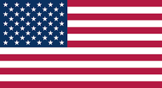

No-cost grant funding for eligible working U.S. citizens who own a 401(k), reviewed according to each applicant’s information and needs.
The USA 401k Grant Program gives eligible applicants an opportunity to request money for business purposes, personal needs, or financial problems.
Owning a 401(k) is an eligibility requirement, but the grant is completely separate from the retirement account. Applying does not authorize a withdrawal, and an approved grant does not reduce or otherwise affect the applicant’s 401(k) balance.
Approved funds are provided free of program charges and do not need to be repaid.

Applicants must meet the program requirements and submit complete information for review.
You must be a working U.S. citizen, at least 18 years old, and the owner of a 401(k) account.
Explain how the money would help your business, meet a personal need, or solve a financial problem.
The information in your application is reviewed to determine approval and the amount you may receive.
Approved grants have no program charge, require no repayment, and remain separate from your 401(k).
There is no single guaranteed award amount. The review team considers the applicant’s personal details, employment, intended use, and financial information.
Applicants should provide accurate and complete information. Meeting the basic requirements allows an application to be reviewed but does not guarantee approval or a particular amount.
Find out whether you qualify and what amount may be available based on your application.